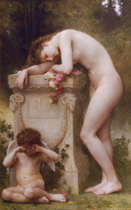

Modernamente, la elegía es un subgénero de la poesía lírica que designa un poema de lamentación. La actitud elegíaca consiste en lamentar cualquier cosa que se pierde: la ilusión, la vida, el tiempo, un ser querido, un sentimiento, etc. En la Antigüedad grecolatina, sin embargo, el verso elegíaco hacía referencia exclusivamente al tipo de metro empleado, el llamado dístico elegiaco. La elegía funeral (también llamada endecha o planto en la Edad Media) adopta la forma de un poema de duelo por la muerte de un personaje público o un ser querido, y no ha de confundirse con el epitafio o epicedio, que son inscripciones ingeniosas y lapidarias que se grababan en los monumentos funerarios, más emparentados con el epigrama, otro género lírico.
PUEDES REVISAUN UN EJEMPLO AQUI